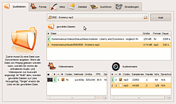
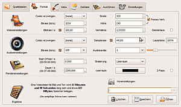
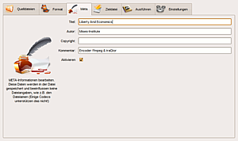
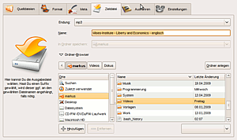
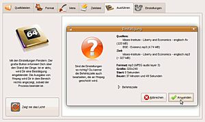
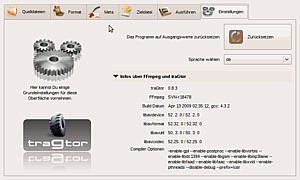

traGtor
Dieser Artikel wurde für die folgenden Ubuntu-Versionen getestet:
Ubuntu 16.04 Xenial Xerus
Ubuntu 14.04 Trusty Tahr
Zum Verständnis dieses Artikels sind folgende Seiten hilfreich:
 traGtor
traGtor  wurde als grafische Oberfläche zum Konvertieren diverser Medienformate mittels FFmpeg entwickelt. Es hat sich zum Ziel gesetzt, möglichst ohne Benutzung der Kommandozeile dem Benutzer einen Großteil der wichtigsten Funktionen und Optionen zur Verfügung zu stellen. Für eine Stapelverarbeitung ist das Programm nicht geeignet, wobei an dieser Stelle WinFF erwähnt werden soll.
wurde als grafische Oberfläche zum Konvertieren diverser Medienformate mittels FFmpeg entwickelt. Es hat sich zum Ziel gesetzt, möglichst ohne Benutzung der Kommandozeile dem Benutzer einen Großteil der wichtigsten Funktionen und Optionen zur Verfügung zu stellen. Für eine Stapelverarbeitung ist das Programm nicht geeignet, wobei an dieser Stelle WinFF erwähnt werden soll.
traGtor stellt u.A. folgende Funktionalität bereit:
Umwandeln aller von FFmpeg/Libav unterstützten Medienformate
Extrahieren von Audiomaterial aus Videos
Zusammenfügen von Audiomaterial mit Videos oder Bilddateien
Bei mehreren Audio/Videospuren in einer Datei Wahl des gewünschten Streams
Anpassung von Bildrate/-größe, Kompression
Lautstärkeanpassung
Streamcopy (verlustfreies Kopieren eines Formates)
2-Pass-Option für einige Codecs
Mehrsprachigkeit
Besonders erwähnenswert ist, dass traGtor im Gegensatz zu anderen Programmen nicht verschleiert, welche Optionen konkret genutzt werden. So kann man leicht erkennen, mit welchen Parametern die Konvertierungsprogramme ffmpeg bzw. avconv aufgerufen werden. Realisiert wurde das GTK-Programm mit Python und Glade. Es steht unter der Lizenz GPL2 .
Voraussetzungen¶
traGtor benötigt als Voraussetzung FFmpeg bzw. Libav und id3v2. Da traGtor die Möglichkeiten bzgl. les- und schreibbarer Codecs von FFmpeg/Libav nutzt, bestimmen die vorhandenen Codecs, welche Formate konkret bearbeitet werden können (siehe auch ubuntu-restricted-extras).
 mit
mit Installation¶
Die Anwendung ist nicht in den offiziellen Paketquellen enthalten. Man muss daher zur Installation auf Fremdpakete oder die Fremdquelle des Entwicklers ausweichen.
Fremdpaket¶
Von mein-neues-blog.de werden
DEB-Pakete  angeboten.
Die unterstützten Ubuntuversionen und Architekturen werden aufgelistet.
Nachdem man sie für die korrekte Ubuntuversion und Architektur geladen hat, müssen DEB-Pakete noch installiert werden.
angeboten.
Die unterstützten Ubuntuversionen und Architekturen werden aufgelistet.
Nachdem man sie für die korrekte Ubuntuversion und Architektur geladen hat, müssen DEB-Pakete noch installiert werden.
Hinweis!
Fremdpakete können das System gefährden.
Fremdquelle¶
Um aus der Fremdquelle zu installieren, muss man unabhängig von der Ubuntu-Version die folgende Paketquelle freischalten.
Achtung!
Zusätzliche Fremdquellen können das System gefährden.
Dazu die folgende Zeile manuell in die Datei /etc/apt/sources.list eintragen:
deb http://repository.mein-neues-blog.de:9000/ /
Um die Fremdquelle zu authentifizieren, kann man
entweder den Signierungsschlüssel herunterladen und in der Paketverwaltung hinzufügen oder folgenden Befehl ausführen:
wget -q http://repository.mein-neues-blog.de:9000/PublicKey -O- | sudo apt-key add -
Bedienung¶
Starten¶
Das Programm findet sich nach der Installation bei Ubuntu-Varianten mit einem Anwendungs-Menü unter "Multimedia -> traGtor". Alternativ kann das Programm mit dem Befehl tragtor im Terminal oder über
Alt +
F2 gestartet [3] werden.
Funktionsweise¶
traGtor ist durch Reiter in 6 Bereiche unterteilt:
"Quelldateien"- hier werden ein oder mehrere Quelldateien gewählt und die zu konvertierenden Audio- und Videostreams ausgewählt.
"Format" - unter diesem Reiter werden alle Einstellungen für das Zielformat vorgenommen. Darunter fallen Optionen wie Bildgröße, Codecs, Dauer etc. Diese Einstellungen können als Presets gespeichert werden.
"META"-Angaben - ein bislang noch nicht weit entwickelter Bereich, in dem z.B. Titel und Autor für die ID3-Tags eingegeben werden können.
"Zieldatei" - Wahl des Dateinamens und des Zielpfades für die zu erstellende Datei
"Ausführen" - Einerseits eine informative Taste zum Starten des Konvertierprozesses, andererseits die Ausgabe von FFmpeg nach der Konvertierung.
"Einstellungen" - Informationen zu installierten FFmpeg- und traGtor-Versionen und Sprachwahl
Einstellungen wie gewählte Ziel- oder Quelldateien und die Sprachwahl werden von traGtor automatisch gespeichert und stehen beim nächsten Start erneut zur Verfügung. Einstellungen im Reiter "Format" können dort in sog. Presets gespeichert und wieder abgerufen werden.
Terminologie¶
Streams: Im weiteren Verlauf ist oft von "Streams" die Rede. Dieser Ausdruck bezeichnet einzelne Video- oder Audiospuren, die in einem Mediencontainer (z.B. AVI oder FLV) vorhanden sind. So kann z.B. eine AVI-Datei einen Videostream und mehrere Audiostreams beinhalten.
Codec: Video- und Audiomaterial muss aufgrund der riesigen Dateigrößen von unkomprimiertem Material durch Codierprogramme auf praktikable Größen gebracht werden. Diese Programme nutzen dafür sog. "Codecs". Programme zum Abspielen von Mediendateien benötigen ebenfalls einen Codec, der hier jedoch für die Decodierung (und damit Hör- sowie Sichtbarmachen) des komprimierten Materials dient. Nicht alle Betriebssysteme bzw. Medienplayer können alle Codecs lesen, von daher ist es essentiell, den richtigen Codec für sein Material zu wählen.
Container: Die kodierten Audio- und Videodaten werden in sog. "Containern" gespeichert. So ist z.B. AVI kein Video- oder Audioformat, sondern nur ein "Container", der unterschiedliche Codecs (also Formate) beinhalten kann, AVI und andere Containerformate sind demnach nicht auf einen Codec festgelegt.
Quelldateien¶
 Einzelne Dateien werden in traGtor mit der Schaltfläche oben hinzugefügt, oder auch per Drag'n'Drop auf diesen Button bzw. in die Dateiliste. traGtor kennt zwei Modi, um Dateien zum Konvertieren auszuwählen, "Single" und "Multi". Die Wahl des Modus geschieht mit dem Schalter rechts oben neben dem Schalter für die Dateiwahl. Ist der Multi-Modus aktiv, werden Dateien der Liste hinzugefügt, im Single-Modus ersetzt eine neu gewählte Datei alle vorhandenen Dateien in der Liste.
Hinweis:
traGtor beherrscht keine Stapelverarbeitung. Der Multi-Modus ist für das Zusammenführen von Dateien gedacht.
Unter der Liste der gewählten Dateien werden alle decodierbaren Audio- und Videostreams aufgelistet. Diese können mit dem jeweiligen Auswahlschalter ein- oder ausgeschaltet werden. Auf diese Art kann man z.B. ein englisches Video mit einer deutschen Tonspur aus einer MP3 unterlegen, indem man von der Videodatei nur den Videostream und von der MP3-Datei den Audiostream aktiviert. Ein weiteres Beispiel wäre die Auswahl eines JPGs als aktive Videospur und eine Audiodatei zur Vertonung. Bei einem Konvertiervorgang einer Videodatei mit mehreren Audiostreams kann hier der Audiostream mit der gewünschten Sprache gewählt werden.
Zur besseren Erkennung der Zugehörigkeiten klickt man einen Stream oder eine Datei an und markiert damit alle zugehörigen Streams bzw. die zugehörige Datei in den Listen. Außerdem sind alle zusammengehörigen Dateien und Streams mit einer ID und einer Farbe gekennzeichnet.
Ein  Rechtsklick auf eine Datei öffnet ein Menü, in dem man den Pfad oder den Dateinamen der Quelldatei für die Ausgabedatei übernehmen kann. Weiterhin bietet das Menü die Möglichkeit, die ID3-Tags der Datei in die META-Angaben zu übernehmen, eine Datei aus der Liste zu entfernen, die Datei vollständig von der Festplatte zu löschen oder in dem bevorzugten Wiedergabeprogramm zu öffnen. Das Entfernen aus der Liste ist ebenso mit
Entf möglich. Der Rechtsklick auf einen Videostream zeigt ein Vorschaubild auf das Video, welches auch als Vorschaubild in der Liste erscheint.
Rechtsklick auf eine Datei öffnet ein Menü, in dem man den Pfad oder den Dateinamen der Quelldatei für die Ausgabedatei übernehmen kann. Weiterhin bietet das Menü die Möglichkeit, die ID3-Tags der Datei in die META-Angaben zu übernehmen, eine Datei aus der Liste zu entfernen, die Datei vollständig von der Festplatte zu löschen oder in dem bevorzugten Wiedergabeprogramm zu öffnen. Das Entfernen aus der Liste ist ebenso mit
Entf möglich. Der Rechtsklick auf einen Videostream zeigt ein Vorschaubild auf das Video, welches auch als Vorschaubild in der Liste erscheint.
Die gewählten Dateien werden von traGtor beim nächsten Starten erneut automatisch geöffnet.
Format¶
 Unter diesem Reiter werden alle Einstellungen für das Zielformat vorgenommen. Diese Seite interagiert mit der Quelldatei-Wahl:
wird auf der Quelldatei-Seite ein Videostream gewählt, werden die Einstellungen auf der Format-Seite entsprechend denen des Quellformates gesetzt. Das betrifft Optionen wie die Bildrate, die Größe, etc.
Dasselbe gilt für Audiostreams. Es werden immer die Daten des ersten aktiven Streams übernommen.
Ist in den Streamlisten bei der Quelldatei-Wahl kein Audiostream aktiviert, sind die Einstellungen für die Audiooptionen ausgegraut und nicht bedienbar.
Dasselbe gilt für Videostreams
Wurde eine Formateinstellung verändert, erscheint vor ihr ein kleines Symbol, was die Änderung andeutet. Ein Klick auf dieses Symbol setzt den Wert auf die Voreinstellung zurück.
Video-Einstellungen¶
"Codec erzwingen": bestimmt einen Codec für die Konvertierung des Videomaterials. In der Liste erscheinen alle Codecs, die geschrieben werden können. Der Pseudo-Codec
[none]überlässt FFmpeg/Libav die Wahl des Codecs, der Pseudo-Codec[streamcopy]kopiert das Videomaterial verlustfrei in das neue Format (vorausgesetzt, der gewählte Container - z.B. AVI - kann dieses Format aufnehmen)."Bitrate": Die Bitrate bestimmt einerseits die Dateigröße des resultierenden Filmmaterials, andererseits dessen Qualität. Eine geringe Bitrate erzeugt sehr kleine Dateien mit einer schlechten Bildqualität, große Bitraten dementsprechend große Dateien mit einer hohen Qualität. Die Wahl der Bitrate hängt natürlich auch mit den Ausmaßen des Videobildes zusammen, große Bilder benötigen eine höhere Bitrate, als kleinere.
Hinweis:
Das nachträgliche Erhöhen dieses Wertes bringt keinerlei Verbesserung des Materials mit sich, sondern führt nur zu einer größeren Datei!
"Bildrate": Die Bildrate gibt die Bilder pro Sekunde an, die ein Film enthält. Das Umrechnen von einer Bildrate in eine andere erfolgt dabei nicht interpoliert, was bedeutet, dass FFmpeg/Libav überflüssige Bilder auslässt bzw. fehlende doppelt zeigt. Ein Umrechnen der Bildrate resultiert demnach i.d.R. in einem leicht "ruckeligen" Bild.
"Breite & Höhe": Diese beiden Werte geben die Ausmaße des Videomaterials wieder. Ist "Festes Verhältnis" aktiviert, regelt sich der entsprechend andere Wert automatisch mit. Zu beachten ist, dass nicht jedes Videoformat mit beliebigen Werten zurecht kommt.
"Verhältnis": Dieser Wert gibt das Seitenverhältnis von Höhe und Breite wieder. Eine Änderung ändert automatisch auch die Werte von Höhe und Breite.
16:9 & 13:4: Wird eine dieser beiden Schaltflächen aktiviert, wird das Seitenverhältnis fest gesetzt und der entsprechende Haken aktiviert. Dasselbe geschieht, wenn man das Seitenverhältnis manuell auf 1,7777 oder 1,3333 setzt. Ist eine der beiden Schaltflächen aktiv, wird FFmpeg/Libav die Option
-aspectübergeben."Deinterlace": Fernsehbilder werden nicht wie Videobilder in einzelnen Vollbildern aufgenommen, sondern in sogenannten "Halbbildern", die jeweils immer entweder die geraden oder die ungeraden Zeilen des Bildes beinhalten. Da sich nach jedem Halbbild bei Bewegung die Szene ein wenig verändert hat, sind die fehlenden Zeilen im nächsten Halbbild schon ein wenig verschoben. Würde man nun diese beiden Halbbilder zu einem Vollbild zusammensetzen, hätte das Ergebnis vor allem bei schnellen Bewegungen "ausgefranste" Ränder. Dieses kann man bei der Konvertierung z.B. von DV-Material durch Aktivierung dieser Option etwas abmildern. Die Bildqualität leidet darunter etwas, weshalb man solche Arbeiten besser schon bei der Aufnahme des Materials erledigen sollte.
Audio-Einstellungen¶
"Codec erzwingen": bestimmt einen Codec für die Konvertierung des Audiomaterials. In der Liste erscheinen alle Codecs, die FFmpeg/Libav schreiben kann. Der Pseudo-Codec
[none]überlässt FFmpeg/Libav die Wahl des Codecs, der Pseudo-Codec[streamcopy]kopiert das Audiomaterial verlustfrei in das neue Format (vorausgesetzt, der gewählte Container - z.B. AVI - kann dieses Format aufnehmen)."Bitrate": Die Bitrate bestimmt einerseits die Dateigröße des resultierenden Audiomaterials, andererseits dessen Qualität. Eine geringe Bitrate erzeugt sehr kleine Dateien mit einer schlechten Tonqualität, große Bitraten dementsprechend große Dateien mit einer hohen Qualität. Bei dem MP3-Codec hat sich ein Wert von 128 kBit/s als ein guter Durchschnitt für Populärmusik herausgestellt. Klassikmaterial oder subtiler Jazz sollte mit wenigstens 192, besser 256 kBit/s umgerechnet werden, um eine hohe Qualität zu gewährleisten.
Hinweis:
Das nachträgliche Erhöhen dieses Wertes bringt keinerlei Verbesserung des Materials mit sich und erhöht nur unnötig die Dateigröße!
"Samplerate": Dieser Wert bestimmt die Anzahl an Werten, die pro Sekunde vom Audiomaterial gespeichert werden. Somit beeinflusst dieser Wert die Qualität des Audiosignals maßgeblich. Geringere Werte resultieren in einem Signal mit weniger Höhenanteil. Werte über 44,1 kHz bringen keinen signifikanten Anstieg der Qualität mit sich, sondern werden vornehmlich für die Weiter- oder Nachbearbeitung von Audiomaterial verwendet. Auch hier gilt: Nachträgliches Erhöhen dieses Wertes kann die Qualität nicht verbessern und erhöht nur sinnlos die Dateigröße.
"Audiokanäle": Diese Einstellung bestimmt die Anzahl der Kanäle, die in der endgültigen Datei vorhanden sein sollen. "1" resultiert in einem Mono-Stream, "2" erzeugt eine Stereo-Datei. Auch hier gilt, dass die Erhöhung keinerlei Qualitätsverbesserung mit sich bringt, sondern nur die Dateigröße erhöht.
"Lautstärke": der Regler und das Wertefeld bestimmen, wie laut der Audiostream in der resultierenden Datei sein sollen.
Render-Einstellungen¶
"Start/Offset": Mit diesem Wert (in Sekunden) kann der Startpunkt des Audio- und Videomaterials bestimmt werden. So ist es möglich, nur einen Ausschnitt eines Videos zu exportieren.
"Dauer": Dieser Wert gibt vor, wieviel des Audio- bzw. Videomaterials FFmpeg/Libav in die neue Datei rendern soll.
Skalierung: Wird die Bildgröße und dabei das Seitenverhältnis verändert, kann man hier entscheiden, wie FFmpeg/Libav mit der Änderung verfahren soll. Leerraum fügt dem Videomaterial die fehlenden Pixel hinzu, Beschneiden schneidet überflüssige Pixel ab und Verzerrung ändert das Seitenverhältnis wie angegeben.
"Leerraum": Hat man unter "Skalierung" Leerraum ausgewählt, kann hier die Farbe bestimmt werden, mit der die neuen Pixel eingefügt werden sollen.
"2-Pass": Einige Codecs unterstützen diese Option, um die Bildqualität bei gleicher Dateigröße signifikant zu verbessern. Dabei wird das Videomaterial im ersten Durchlauf nur analysiert und erst im zweiten Durchlauf umgerechnet. traGtor übernimmt beide Durchläufe und führt sie automatisch nacheinander aus.
"Eigene Optionen": Dieses Textfeld steht für individuelle Optionen zur Verfügung. Die Schaltfläche links davon leert das Feld, der auf der rechten Seite öffnet ein Hilfefenster.
"Ergebnis": Hier wird ein geschätztes Ergebnis der o.a. Einstellungen angezeigt.
Presets¶
Alle Formateinstellungen können als Presets gespeichert und wieder abgerufen werden. Presets können auch gelöscht oder überschrieben werden. Der Haken rechts oben gibt an, ob beim Laden von Presets das Containerformat der Ausgabedatei ebenfalls auf den gespeicherten Zustand gesetzt werden soll. Das Containerformat wird dann mit jedem Preset gespeichert.
Laden: Preset aus der Liste wählen (oder vorhandenen Namen eingeben) und "Öffnen" klicken
Speichern: neuen Namen in das Textfeld eingeben und "Speichern" klicken
Überschreiben: vorhandenen Namen in das Textfeld eingeben und "Speichern" klicken
Löschen: Preset aus der Liste wählen (oder vorhandenen Namen eingeben) und "Löschen" klicken
Meta-Angaben¶
 Auf der Seite für die Meta-Angaben können ID3-Tags (und vergleichbare) angegeben werden, die dann von FFmpeg/Libav in die Datei eingebettet werden. Die Aktivierung dieser Funktion erfolgt manuell durch Anklicken der Auswahlbox unter den Texteingabefeldern. Ist diese nicht aktiv, werden auch keine Meta-Angaben mit in die Datei geschrieben. Für eine einfache Voreinstellung können vorhandene Tags aus Quelldateien mit einem Rechtsklick auf eine Datei auf der Quelldatei-Seite in die entsprechenden Felder auf der Meta-Seite übernommen werden.
Hinweis:
Dieser Bereich ist noch nicht voll implementiert und bietet bislang nur rudimentäre Tags, die von FFmpeg/Libav bereit gestellt sind. Eine vollständige ID3v2-Implementation ist für die Zukunft angedacht.
Zieldatei¶
 Unter diesem Reiter wählt man den Pfad, den Container und den Namen der Zieldatei aus. Zu beachten ist, dass nicht jeder Container jeden Codec beinhalten kann.
Ist bei "Container" etwas anderes als der erste Eintrag ausgewählt, wird die entsprechende Endung (wenn nötig) an den angegebenen Dateinamen angehängt. Die Container in der Liste werden ebenfalls direkt aus FFmpeg/Libav ausgelesen, so dass dort ausschließlich die jeweils Verfügbaren auswählbar sind.
Name und Pfad der Ausgabedatei merkt sich traGtor über das Beenden hinaus und stellt diese bei der nächsten Verwendung wieder her.
Sollte die Auswahlliste für den Ausgabecontainer in der Breite über die Möglichkeiten des verwendeten Anzeigegerätes hinaus gehen, besteht die Möglichkeit, in der (versteckten) Datei ~/.tragtor/tragtor.conf unter dem Block [Settings] die Option "containerColumns = n" einzufügen, wobei "n" die Anzahl an Spalten in der Liste angibt.
Ausführen¶
 Dieser Reiter beinhaltet nur drei elementare Dinge: die große Schaltfläche zum Ausführen, eine Auswahl für die Nutzung mehrerer Prozessoren und ein Textfeld für die Ausgabe von FFmpeg/Libav.
Die Schaltfläche stellt einige Informationen dar und ist nur klickbar, wenn keine bekannten Probleme aufgetreten sind. Ist sie grau, hält sie einige Informationen bereit, warum traGtor die Konvertierung nicht anstoßen kann.
Mit der Auswahl für die CPU-Last werden folgende Optionen gesetzt:
"Soft" - die Konvertierung läuft auf nur einem Prozessor und versucht, andere Prozesse nicht großartig zu behindern
"Medium" - die Konvertierung läuft auf der Hälfte der vorhandenen Prozessoren (nur Multiprozessorsysteme) mit normaler Priorität
"Aggressive" - die Konvertierung wird mit der höchsten Priorität aufgerufen. Bei Multiprozessorsystemen und dem richtigen Codec (der muss ebenfalls multiprozessfähig sein) arbeiten alle CPUs unter Vollast.
Ist alles zum Konvertieren bereit, öffnet ein Klick auf die Schaltfläche einen Bestätigungsdialog, der grundlegende Informationen zu Quelle und Ziel bereithält. Außerdem kann in diesem Dialogfeld die Befehlszeile für FFmpeg/Libav nicht nur eingesehen, sondern auch bearbeitet werden. Ein Klick auf "Abbrechen" schließt das Fenster wieder, "Ausführen" startet die Konvertierung.
Während der Konvertierung wird ein Prozessfenster eingeblendet, das über den Verlauf informiert. Ist der Vorgang erfolgreich abgeschlossen, kann das Ergebnis direkt aus diesem Fenster heraus mit einem Klick auf "Wiedergabe" im bevorzugten Medienplayer geöffnet werden. Ein Klick auf "Abbrechen" stoppt einen laufenden Konvertierungsvorgang.
Sind während der Konvertierung Fehler aufgetreten, werden sie in dem großen Textfeld auf der Seite "Ausführen" angezeigt.
Einstellungen¶
 Diese Seite hält Informationen zu traGtor und FFmpeg/Libav bereit und bietet einen schnellen Überblick über die installierten Versionen und die Optionen, mit denen FFmpeg/Libav ursprünglich kompiliert wurde.
Außerdem kann hier das Programm mit einem  -Klick auf die Voreinstellungen zurückgesetzt werden.
-Klick auf die Voreinstellungen zurückgesetzt werden.
Auch die Sprachwahl findet sich auf dieser Seite, welche in Echtzeit umschaltet und über einen Neustart des Programms hinaus erhalten bleibt.
Neuere FFmpeg-/Libav-Versionen verlangen andere Optionen für Skalieren, Beschneiden und Erweitern. Welche Optionen von traGtor verwendet werden, kann man ebenfalls in dieser Sektion wählen.
Das Programm kann nach dem Abschließen der Konvertierung verschiedene Aktionen ausführen, die in den Einstellungen und im Fortschrittsfenster ausgewählt werden können, wie z.B. Programm schließen, Computer herunterfahren, Datei wiedergeben, etc.
In der Konfigurationsdatei ~/.tragtor/tragtor.cfg können einige über die Benutzeroberfläche nicht erreichbare Werte eigetragen werden. Der folgende Wert gibt an, in wie viele Spalten das Dropdown-Menü für die Containerauswahl umgebrochen werden soll:
containerColumns = N
Hat man mehrere Versionen von ffmpeg bzw. avconv auf dem System istalliert, kann hiermit die Benutzung des bevorzugten Programms erzwungen werden:
command = /PFAD/ZUM/PROGRAMM
Fehlerberichte¶
Der Entwickler freut sich über Bugreports, die auch möglichst umgehend bearbeitet werden. Die Fehler können unter Angabe der FFmpeg-/Libav- und traGtor-Version in das Blog des Entwicklers gepostet werden, die u.a. auf der Seite "Einstellungen" zu finden ist. Für weitere Informationen empfiehlt es sich, traGtor über die Kommandozeile zu starten und die Ausgabe des Programms mit in den Fehlerbericht einzubinden.
Links¶
News
 - aktuelle Nachrichten
- aktuelle Nachrichten
Audiodateien umwandeln
 Programmübersicht
ProgrammübersichtVideodateien umwandeln
Programmübersicht
- Erstellt mit Inyoka
-
 2004 – 2017 ubuntuusers.de • Einige Rechte vorbehalten
2004 – 2017 ubuntuusers.de • Einige Rechte vorbehalten
Lizenz • Kontakt • Datenschutz • Impressum • Serverstatus -
Serverhousing gespendet von